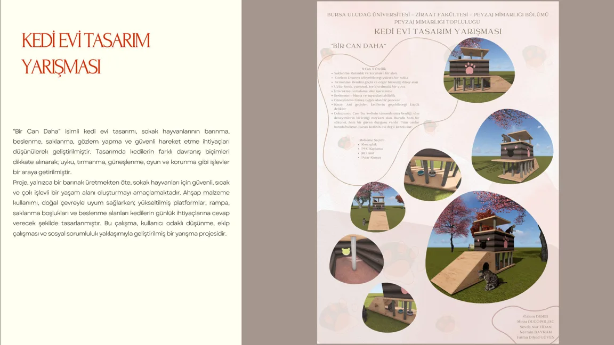

“Bir Can Daha” - Kedi Evi Tasarım Yarışması

01 / Proje yaklaşımı
Sokak kedilerinin barınma, beslenme, tırmanma, oyun ve korunma ihtiyaçları için geliştirilen çok işlevli yarışma projesi.
Çizimden
peyzaja.
Orijinal portfolyodan proje paftaları. Paftalardaki açıklamalar Türkçedir.
